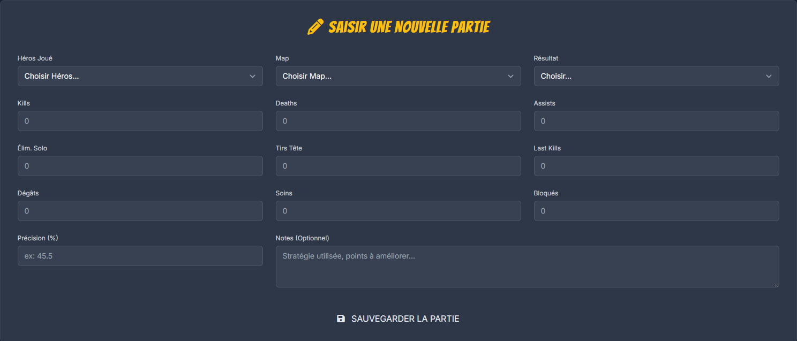

Comment Auduj Simplifie le Suivi de Vos Performances Marvel Rivals
Suivez ces étapes simples pour transformer vos données de jeu brutes en analyses puissantes et prendre une longueur d'avance.
Inscription Rapide
Créez votre compte Auduj gratuitement en quelques secondes. Votre tableau de bord personnel vous attend !
Saisie Manuelle Facile
Après chaque partie, entrez vos statistiques clés (Héros, KDA, Map, Victoire/Défaite...) via notre formulaire optimisé.
Analyses Instantanées
Auduj traite vos données et génère des graphiques et des analyses claires : KDA, taux de victoire, performance par héros...
Suivi & Progression
Visualisez votre évolution dans le temps, identifiez vos points forts et vos axes d'amélioration pour ajuster votre stratégie.
Le Pouvoir de la Saisie Manuelle
Contrairement aux trackers automatiques (souvent indisponibles ou imprécis au lancement d'un jeu), la saisie manuelle vous garantit :
- Fiabilité Absolue : Vous contrôlez les données entrées. Pas d'erreurs d'API ou de statistiques manquantes.
- Contexte Personnel : Ajoutez des notes sur vos parties (ex: "mauvais matchmaking", "testé nouvelle strat") pour une analyse plus riche.
- Engagement Actif : Le simple fait de noter vos scores vous aide à mieux mémoriser et comprendre vos performances.
- Indépendance Totale : Fonctionne dès le premier jour du jeu, sans attendre une API officielle.
Auduj rend ce processus rapide et agréable grâce à une interface pensée pour les joueurs.
Une Saisie Optimisée pour Vous
Nous savons que votre temps est précieux. C'est pourquoi le formulaire de saisie d'Auduj est conçu pour être :
- Rapide : Moins d'une minute par partie.
- Intuitif : Menus déroulants pré-remplis (Héros, Maps...).
- Mobile-Friendly : Saisissez vos stats où que vous soyez, depuis votre téléphone.
- Feedback Visuel : Confirmation claire après chaque soumission.
Aperçu du formulaire de saisie actuel :
